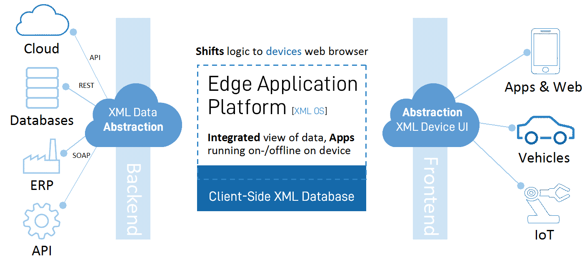

First, let us look at what ideas started the development of the two projects. There were a couple of clearly defined goals:
Shift server-side execution to client-side, typically the web browser. This is sometimes referred to as device edge computing.
Shift all HTML generation client-side, i.e., no user interfaces generated server-side.
Shift all program logic client-side to enable offline-first applications that continue to work while not connected to the Internet
Provide a high-level XML abstraction of describing user interfaces instead of programming the user interface with JavaScript and HTML5.
Provide an event-based programming language in XML as a higher abstraction to write logic and orchestration in addition to JavaScript.
Implement a full separation of user interface (view), program logic (controller), and model (data) according to a pure MVC design pattern.
Intelligent data binding of XML to UI components.
Provide data abstraction towards all types of data sources; client-side, XML Web Services, REST, and JSON.
Use the cloud backend as a pure data repository accessed through an API that provides data, authentication, and security.
Enable anyone to add support for any XML application (language) and allow the platform to recognize and act when encountering XML applications.
Reuse as much as possible of the browser capabilities, extend or replace when necessary.
Figure 1. Abstraction based on XML in all areas is key.
|  |